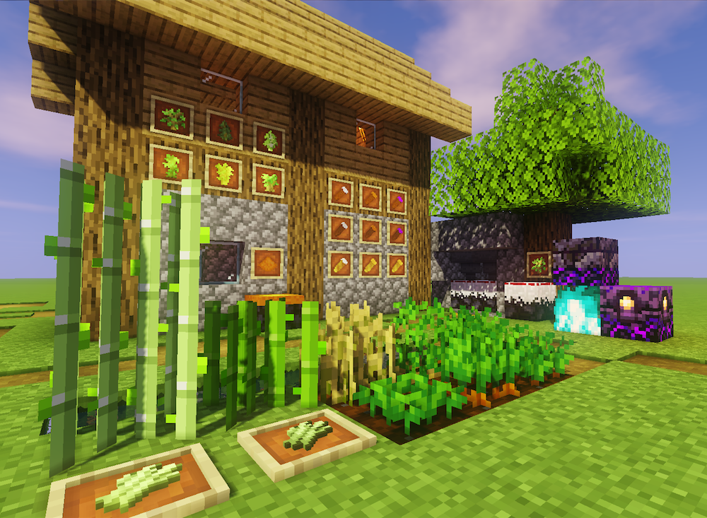
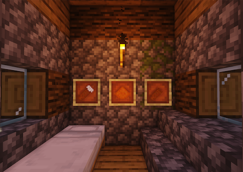
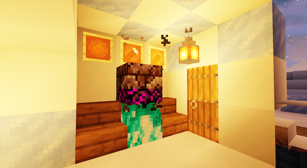
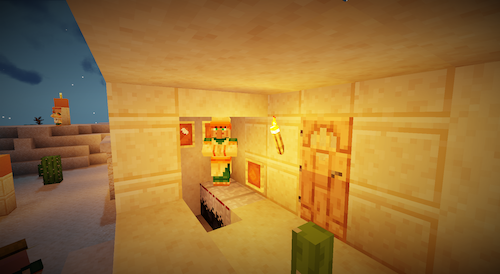
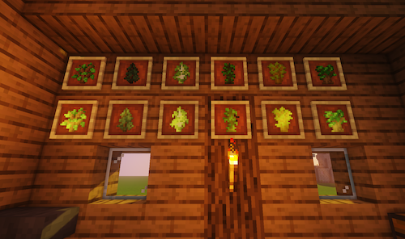

农业与魔法的完美结合！与@teddyxlandlee协作开发的Minecraft模组项目，添加了地瓜、农林台、研磨器、魔法锅、附魔作物等。


在本模组中添加的类食物。它分为紫薯、红薯和白薯，以及三个变种，有地瓜粉、地瓜皮等。

魔法锅散发着黑色的光泽。你可以通过在它下方3×3区域内点燃灵魂火来激活魔法锅，将三个任意品类的生地瓜转换为其他品类或对其进行随机附魔。

研磨器有着一个磨盘，它的作用是将地瓜研磨为地瓜粉。

附魔树苗和作物的生长速度要快于原版树苗或作物，且会长成附魔树或附魔作物。